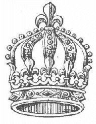
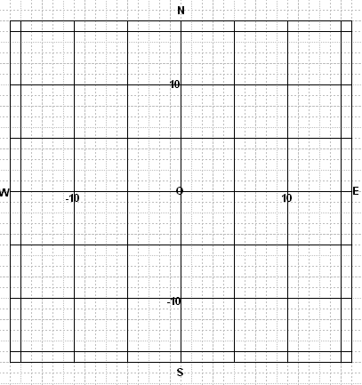

Guilty Pointy |
 |
Once upon a time, in a land far away, called Cartesia, there lived a good and just king. His name was King Ren�. He lived in a large palace in the exact center (called "The Origin") of the capital city, Des Cartiana. The city was laid out in the form of a large square, divided into 4 sectors (quadrants) by the N-S boulevard and the E-W boulevard (called axes). Each segment of the boulevards was 40 blocks in length. Individual streets criss-crossed the city perpendicular to those axes, one street for each integer number. (See map below for the central portion of the city, with a few principal streets identified.)
 The inhabitants of this city were called Lattice Points, or Pointy's for short, because their residences were located at the intersections of the streets. Hence, it was simple to describe the location of any LP by referring to 2 numbers, like (4, 7). That meant, go 4 blocks east of King Ren�'s palace, then turn north for 7 blocks more.
It was indeed a magnificent city.
One day on NCC, the News Channel of Cartesia, the breaking news was all about the robbery of the king's crown from the royal treasury. Worth $1 million for all its elegant jewels alone, it was the pride of His Highness, having been in His family for generations.
So King Ren� called for His country's best detective, Inspector Al G. Pow, to solve the crime. Inspector Pow set to work immediately. The first break he received was a phone call from an underworld informant, named Hughie Hyperbola. The brief message said: "The guy you want can be found living at lattice points that lie on the solutions to this equation -->
(3x)(2y) = 216." Al made a list of all possible suspects that met that criteria, and waited for the next tip to come in. The following day a letter was delivered to Pow's little office, sent from another contact, Cecil Circle. It said: "Now go to places whose addresses are found around here:
x2 + y2 = 97." "Well," thought Pow, with a smile, "we may be going in circles, but we're finally making great progress." He reported to the king, saying "It won't be long now."
The next clue came straight from Larry Lyon, (a.k.a. "the straight lion"), who left this message on Pow's answering machine: "Go directly to 4x - 4y = 20. But go prepared."
"I need just one more piece of intelligence," Pow contemplated. "And this case will be closed."
Finally, it happened. A mysterious looking box showed up on Pow's doorstep, identified cryptically, "from RR.". "Ah, good! Ratio the Rat has decided to rat on his pals once more." The message inside merely said, "Reason rationally as you resolve this ratio:
18x : 8y = 1 : 1." Now Pow knew his man, er, point. He immediately rushed over to the king's palace, and whispered in the Royal ear the following, "Sire, the guilty pointy is ___!" [Well, you didn't think I'd tell you who it was, now did you?]
The king then exclaimed, "Guards, go to ___, and arrest that scoundrel! Bring him and my crown to me forthwith!"
Having completed his task, Al excused himself and returned to his home library of Algpow problems from his favorite website, the Math Forum.
| Comments? Send e-mail. | Back to top | Go back to Home Page | Go back to Contents |